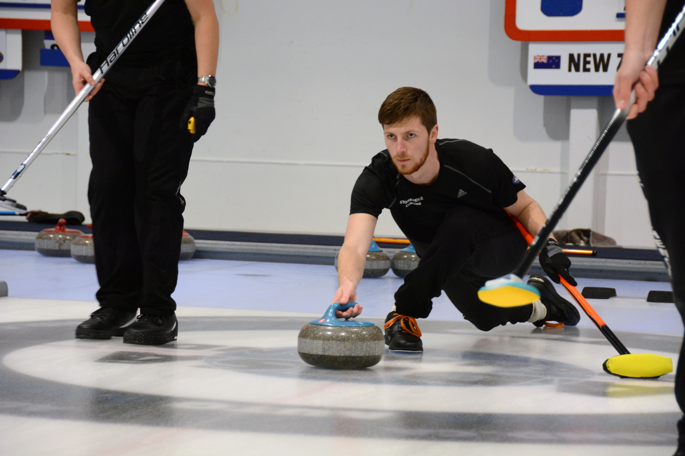

Who Am I?
I Am a Game Developer
I have been passionate about games since I was little. I can still remember making games in intermediate school (probably when I should have been learning how to write essays), and how amazing it was to let my imagination run wild. There may have been turtles throwing ninja stars at some point. This enthusiasm has continued through to this day, and as I finish my Software Engineering degree at the University of Auckland, I spend much of my free time making and playing games.
I have always been creative, and gaming has been a big part of my life in terms of expressing this creativity. I have worked on two collaborative games: Call of Booty (A pirate game made for a University course) and Star Sine (Made for the GGJ 2017). I really look forward to coming together with other developers in the future. Below are examples of games that i've worked on.
Curling
This is the most technically difficult game i've ever started, and also the most tricky i've ever attempted to make. For those not familiar with curling, the stone rotates as it travels down the ice, causing very complicated physics interactions. Unfortunately the science behind the result you see is highly debated, meaning that Unity can't handle this for the developer. This is the first game that i've decided to take to a deployable state as opposed to just trying to make something cool.

This is the standard view of the stone as the user follows it down the ice. It mimics the perspective of the throwing player in curling as they usually follow directly behind the stone.

This image demonstrates the view that the player sees when the other team is throwing. This is where the captain stands in a curling game, and gives the player a good view of the current stones in play, as well as making them feel in control.

To further support the feeling that the player is in a real game of curling, an imitation of a full curling stadium was created in the Unity3D scene editor.

A prefab for the stones also had to be created. This was made from Unity Meshes, to be updated with a Blendr model when I can find the time to learn how.

This is the image of the user input.

This is the image of the user input.
Minesweeper

Minesweeper has been a game that has always interested me, and i've had a few goes at coding it. While the first one was in Java, this one was made in Unity3D using C#, and I'm really happy with the result. I also thought the grass and dirt theme was a nice twist on a classic game.
Space Sine

This game was created in 48 hours (including sleep) with 2 other developers I had never met before. It was created for the 2017 GGJ with the theme of "Waves". I was the lead programmer for this game and focused on the beam mechanics and the spawning/behaviour of enemy ships.
This was my first experience making a game with people that I wasn't friends with beforehand, and was a very enjoyable experience. There were some limitations with having no game artists, but we compensated with some free assets and programmer art.
I Am a Web Developer
Another area that really interests me is Web Development and Web Design, particularly front-end Web Developement. While I have not had many opportunities for this, I have found the ones I have had very engaging, some of which are shown below.
Deloitte Web App


This website was made using the Ember.js framework, for a client as part of my Agile Development course at University. It was made by a team of 8 Engineers, but the screenshots shown are some of my work on it. The main areas of my work were integrating boostrap sliders and a bootstrap carousel into the ember framework to allow the user's quiz answers to be saved locally. I also did the styling for the homepage.
Dunedin Curling Website


This website was a hobby project made for the benefit of the Dunedin Curling Club. It was also made using the Ember.js framework. This website was a solo project, and all the work shown here is my own.
What Else Do I Do?
Sports
I have played a sport in every single year since I was 5, playing up to 3 at one time. I really enjoy the team nature of some sports, and have been very close with my rugby, curling, and cricket teams over the years. I have also swum over the years, though this was mainly of a fitness perspective and less competitive than the other sports.Rugby

Rugby has been my favourite sport since I was 5, playing every year except my first year of uni, where I coached instead. I like both the team culture generated by the game, and the successful feeling of combining the work of 15 people towards a common goal.
Curling
Curling, however, is a more recent addiction of mine. It has been known to be called "Chess on Ice", and this intensely tatical aspect appeals to me. In addition to this, the team size is a lot smaller than in rugby (4-5 people) which allows you to be really close with your team mates.
Gaming
Similar to my interest in making games, I have always enjoyed playing games. These range from arcade style games like Tetris and Minesweeper, to Hearthstone, and even the Halo universe. If i'm not studying or playing sport, this is most likely where you'll find me. Listed below are my (current) favourite games.Hearthstone

Halo

XCOM